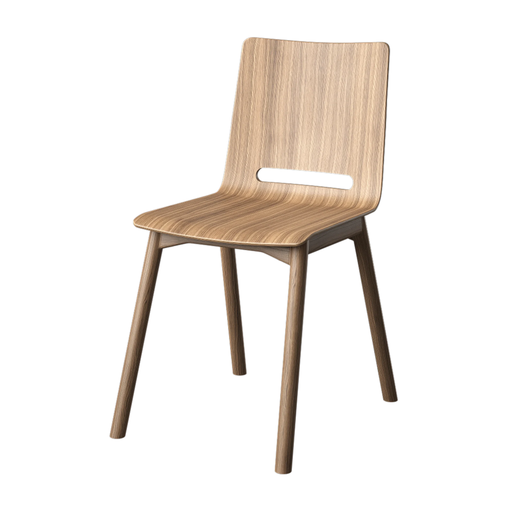
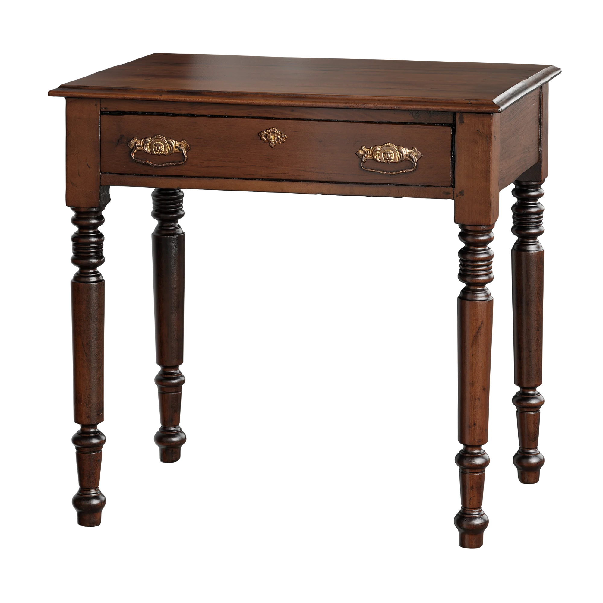

Profesyonel onarım.
Rölöve, Restitüsyon, Restorasyon.

Özgünlük, en az müdahale ve doğru malzeme

₺1499
Minder Sökümü: Sandalyenin tersini çevirerek vidalanmış oturma minderini iskeletten ayırırız.
Aksesuarları Çıkarma: Varsa eski çivileri, zımbaları ve metal bağlantı elemanları sökülür.
Sağlamlaştırma: Sallanan eklemleri ahşap tutkalı ile yapıştırılır ve kuruyana kadar işkence (kelepçe) ile sıkıştırılır.
Kusurları Kapatma: Çatlak veya derin çizikleri ahşap macunu ile doldurup kuruması beklenir.
Eski Katmanı Kazıma: Kalın zımpara (80-120 kum) kullanarak eski vernik veya boyayı tamamen temizlenir
Pürüzsüzleştirme: İnce zımpara (220 kum) ile ahşap yüzeyi pürüzsüz hale getirin ve tozları nemli bir bezle silinir
Doğal Görünüm: Ahşabın dokusunu korumak için ahşap koruyucu renklendirici ve ardından su bazlı vernik uygulanır.
Renkli Görünüm: Chalk paint (tebeşir boyası) veya akrilik ahşap boyası ile 2 kat boyanır, katlar arasında zımpara yapılır ve ardından sıvı cam veya vernik ile sabitlenir.
Sünger Değişimi: Eski çökmüş süngerleri çıkarıp yerine uygun ölçüde yüksek dansiteli döşemelik sünger keslir.
Kumaş Kaplama: Yeni kumaşı süngerle kaplı panelin üzerine gerdirerek arkasından döşeme zımba tabancası ile sabitlenir.
₺3499
Hazırlık ve Zımparalama: Eski boya veya vernik kalıntılarını yok etmek için ince kum zımpara kullanılır
Temizlik: Yüzeydeki toz ve kirleri nemli bir bezle tamamen temizlenir
Tamirat ve Doldurma: Derin çizik veya çatlakları ahşap dolgu macunu ile doldurulur
Doldurma Sonrası: Macun kuruduktan sonra o bölge pürüzsüz olana kadar tekrar zımparalanır
Boyama ve Koruma: Ahşap rengini ortaya çıkarmak için vernik ya da ahşap koruma yağı sürülür.
Kişiselleştirme: Farklı bir tarz isterseniz akrilik mobilya boyası ile masanızı boyanır.
₺10499
Hazırlık ve Söküm: Dolap kapakları, çekmeceleri, kulpları ve menteşeleri tamamen sökülür.
Temizlik: Yüzeydeki yağ, kir ve tozları sirkeli su veya yağ çözücü bir deterjan yardımıyla tamamen temizlenip kurulanır.
Tamirat: Varsa kırık, çatlak veya derin çizikleri ahşap macunu ile doldurlur ve kurumaya bırakılır.
Zımparalama: Macun kuruduktan sonra pürüzsüz bir zemin elde etmek için yüzeyi zımparalanır. (boyanın iyi tutunması için hafifçe matlaştırmak yeterlidir)
Astarlama (İsteğe Bağlı): Özellikle koyu renkli bir dolabı açık renge çevirecekseniz, renk kusmasını önlemek için 1 kat astar boya uygulanır.
Boyama: İnce katlar halinde, katlar arasında ortalama 24 saat bekleyerek en az 2-3 kat boyama yapılr. Rulo fırça geniş yüzeyler, ipek fırça ise detaylar için idealdir.
Vernikleme: Boyama işlemi bittikten ve tamamen kuruduktan sonra, dolabın çizilmesini ve yıpranmasını önlemek için mutlaka 2 kat su bazlı vernik uygulanır.
Aksesuar Yenileme: Restorasyonu tamamlamak için dolabınıza yeni, modern veya eskitme tarzda şık kulplar takılır.